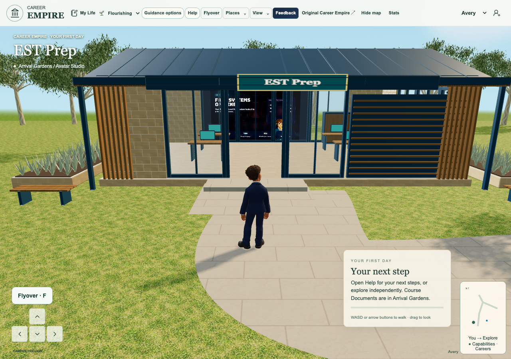
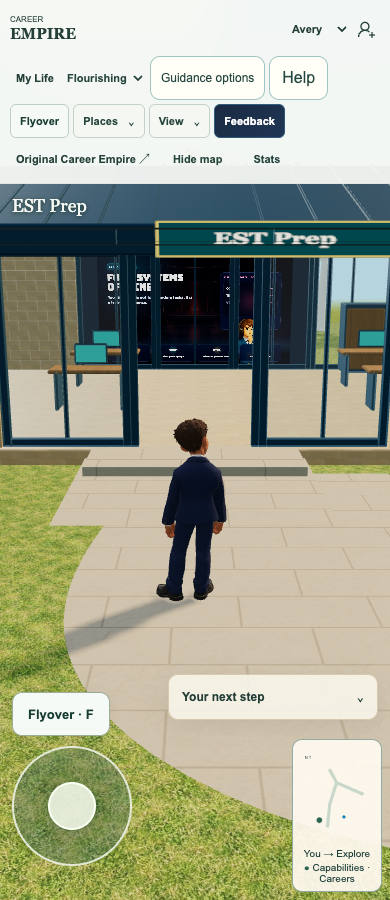
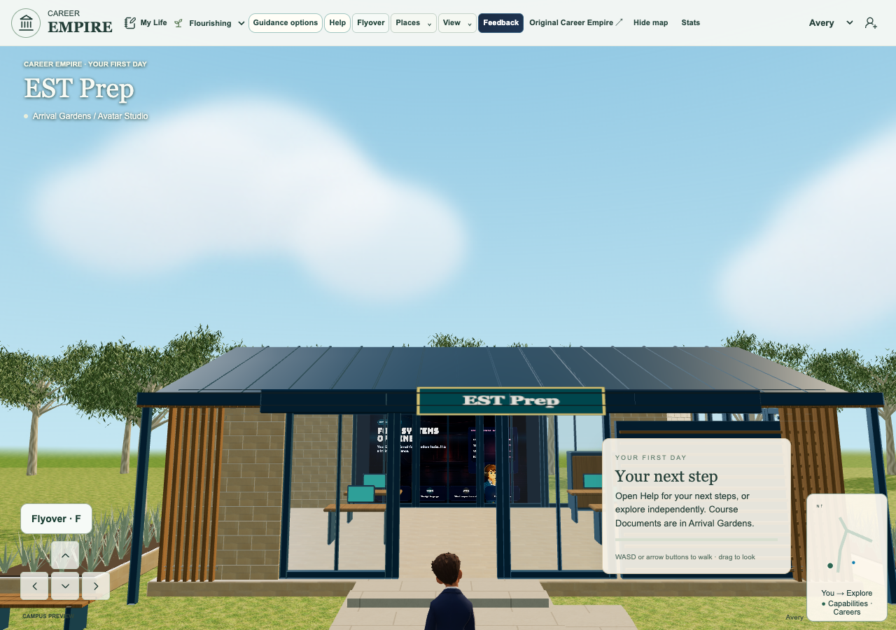
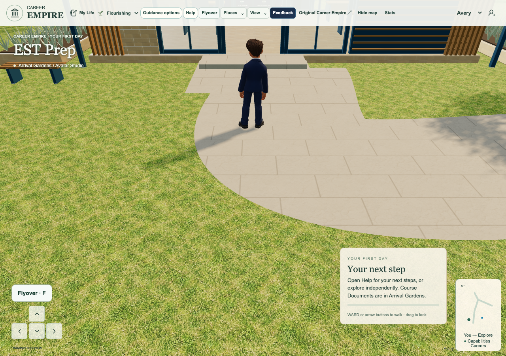
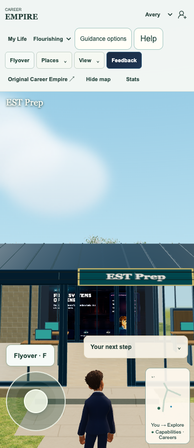
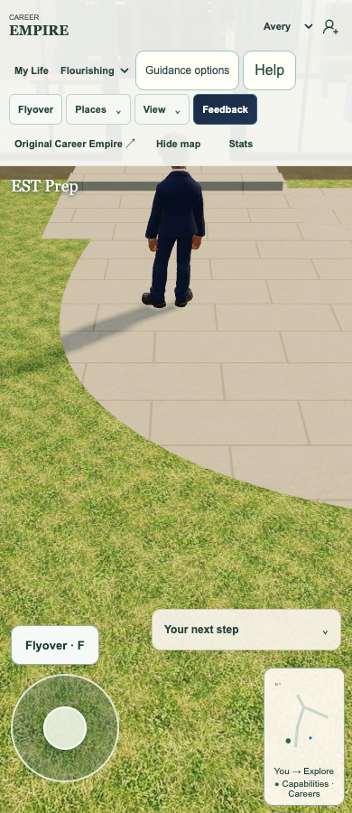

EST cabinet clearance and exterior vertical pan
Latest explicit EST correction
Tania asks: better but move the podium (brown table interrupting the view of the video) and allow panning up and down from this view. Exact supplied image(20261113-011443).png was inspected through Library. The sole existing game integrator owns this serial successor on live399a4da. Tania subsequently explicitly authorized the separate Portfolio closeout and this new EST source review. Portfolio closeout2c1fbe2 is preserved as the base; no Portfolio source integration or root reader bundle is changed by this160source-only successor.
Cabinet moved as one existing assembly
The brown obstruction is Tool storage plus Storage front, Storage front.001 and Storage front.002 in the unchanged workplace GLB. Before static batching, all four translate+4.2m on localX together, moving the cabinet from worldx15 to10.8. Its3m width now fits worldx9.3–12.3 inside the existing room and clear of rear-video x13.124–18.877. Geometry, materials, source GLB, furniture count and relative panel positions remain unchanged. The transform is idempotent and refuses partial assemblies; loader-sanitized names are supported. Native scene metadata confirms exactly4parts moved. Original doors, walls, floor, monitors, back video and physics stay intact.
Bounded exterior vertical pan
Mouse and ordinary touch pointer drags now adjust pitch only in the existing EST front approach x9–23,z6–14.1 while in town and outside aerial mode. Horizontal look remains. Pitch is bounded[-.55,.75]; zero tilt preserves the prior framing exactly. The camera look target changes after collision clearance; camera body and avatar do not teleport or move. Entering another mode or Recenter resets this tilt. Chapel tilt, Flyover, indoor cinema and unrelated campus framing remain unchanged.
Exact qualification
396unit tests across84files pass, including4new assembly/idempotence/name/incomplete-assembly/pitch/area checks.356staged asset hashes and108reachable imports pass. Actual isolated native Chrome1280/390/1920 verifies clear rear-film sightline in the same front-entrance view, exact4part relocation, up and down mouse/automated touch panning with actual camera forward-vector changes, zero avatar displacement and restored zero framing. Actual physical walk-in, both entry actions, four loaded card/guide faces, audible cinema and real mouse/touch screen gesture, close and keyboard/touch Return to16,12.5 all pass. Zero page errors. Wide and phone native captures inspected. One initial quote error prevented the observer harness launching; retained, then corrected only in the harness. Native fullscreen denial in headless remains separate from working audible cinema.
Preservation and limits
Portfolio399a4da overview, shared STAR/log/PDF/validated Market return code remains byte-unchanged except the game app cache/import chain. The app change adds only local EST exterior pitch alongside existing input and mode resets. Archon, Notes, shared teaching bank, source documents, four monitor cards, EST rear-window media/return and Chapel artwork/interior remain unchanged. No new data collection, provider, identity, account, role, backend, permission, Storage API, retention, telemetry or logs. Existing CI failures in admin/legacy paths remain separately recorded; required current CI log is retained, no all-CI-green claim. Actual Safari, physical device/classroom and Tania appearance acceptance remain separate.
Release boundary
This is only the necessary exact8file source review for the newly requested EST game correction. No root reader bundles or Portfolio wording corrections are changed by it; the separately approved153closeout is preserved byte-for-byte except the required new160record and current next action. Genuine160receipt and normal guarded game push remain required; source review is not proof of game deployment. Source-qualified candidate only. Chapel room discrepancy remains an evidence-based clarification, not a guessed geometry replacement.

Actual isolated native candidate. Game publication and Tania acceptance separate.
Actual isolated native candidate. Game publication and Tania acceptance separate.
Actual isolated native candidate. Game publication and Tania acceptance separate.
Actual isolated native candidate. Game publication and Tania acceptance separate.
Actual isolated native candidate. Game publication and Tania acceptance separate.
Actual isolated native candidate. Game publication and Tania acceptance separate.playable-3d/app.js 100644:a38b142964bb90574530b9cb68ba89ddd608f40e
playable-3d/campus-landscape.js 100644:d3b6c0e2653427bebe6042e26b68e5a8ca7e8ea1
playable-3d/est-exterior-view.mjs 100644:1e54162f9b20168b1b998d9a563c9529407a5fa4
playable-3d/guest-shell.mjs 100644:94d4ba475653d88040d36a22ae3bc63b10e835ea
playable-3d/index.html 100644:8c05ff0872f0e302f9934f599f7c2a7dbec4e699
playable-3d/release-manifest.json 100644:bbaf60f0e196bbc47d09b13628eaf4ed8fde5293
playable-3d/world.js 100644:ce260964851b7130ca61dc28c76bbdcb4bfe13d4
tests/unit/est-exterior-view.test.mjs 100644:f5b4ed0ede6ca5e018474b75792a2d4415085ad9